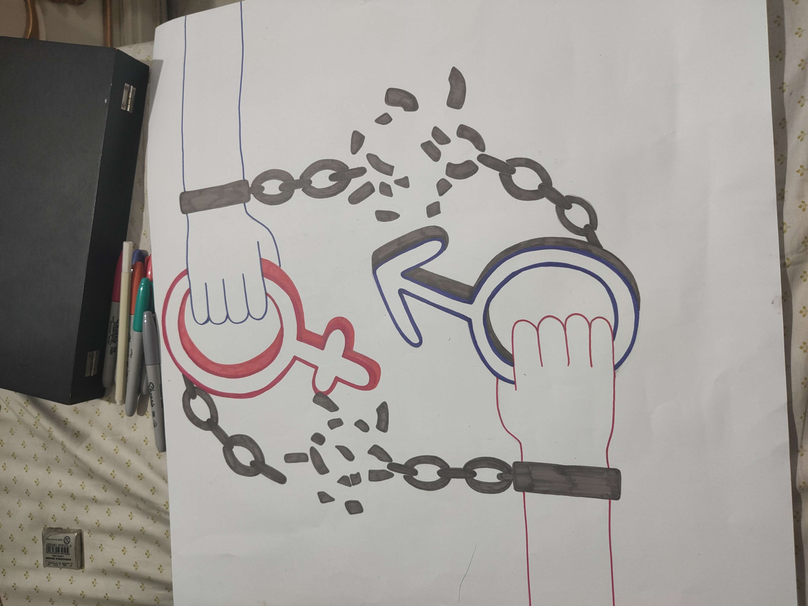
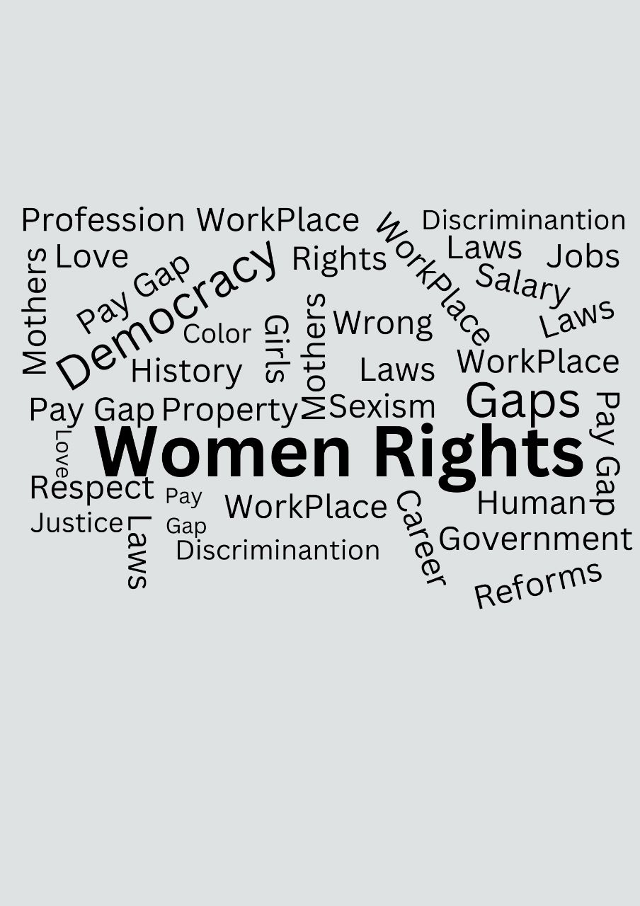
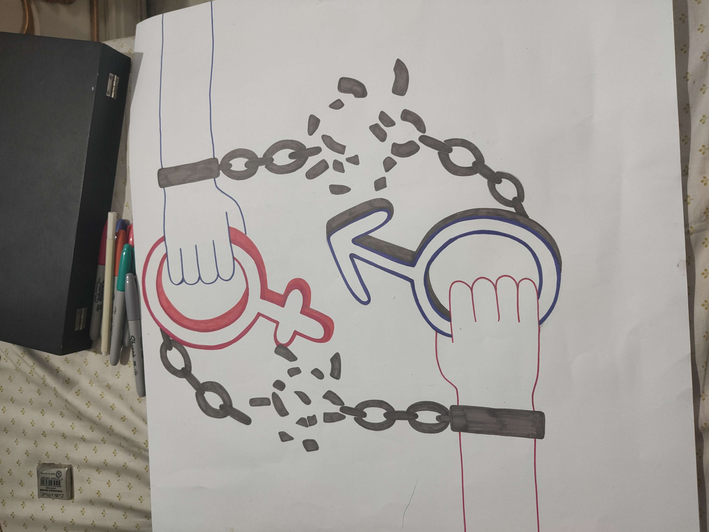
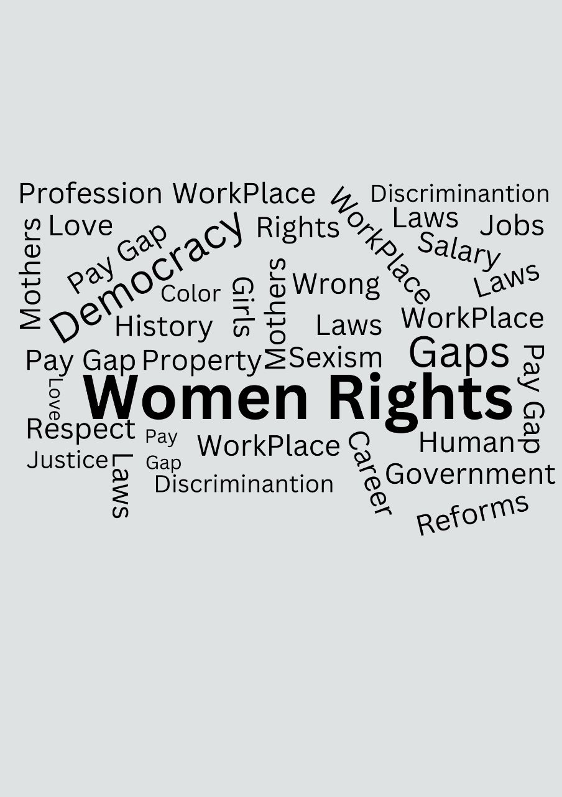
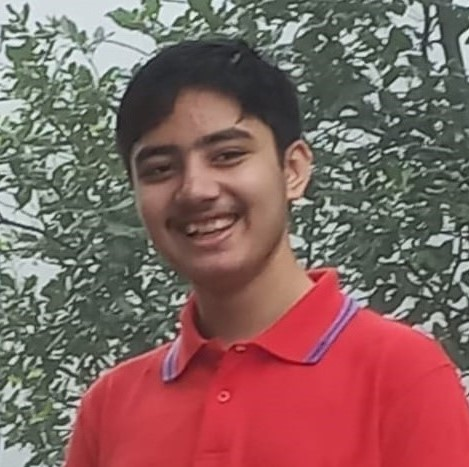
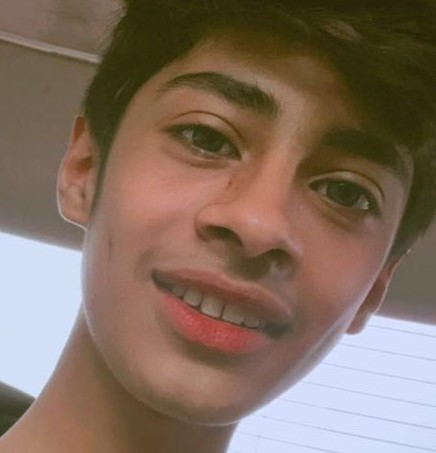
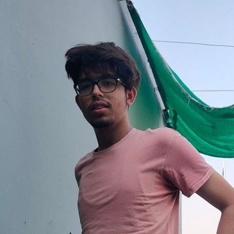
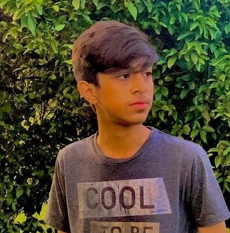
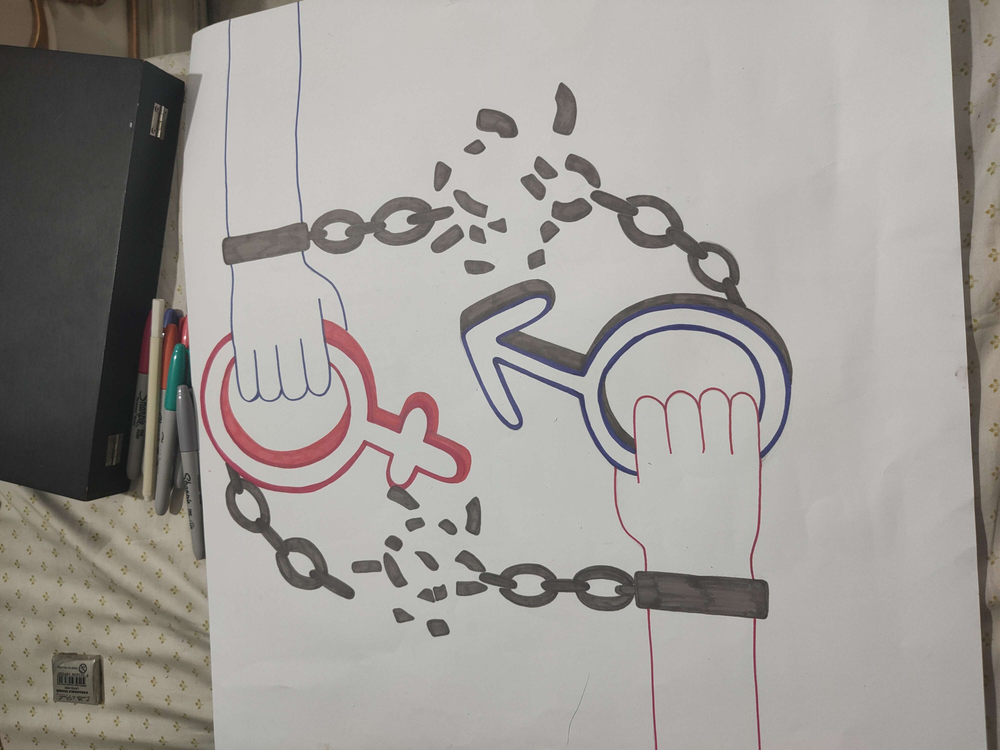
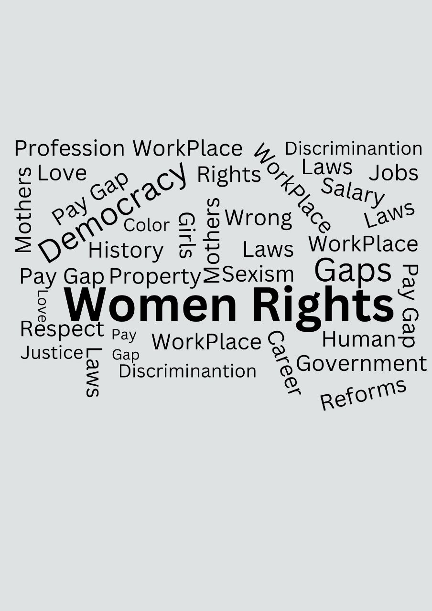

Awareness
 



" I recognize no rights but human rights — I know nothing of men's rights and women's rights "
- Angelina Grimké
Women’s rights are also human rights. Every human is entitled to freedom of opinion and expression, the right to work, and the right to education, etc. However, these rights are not always respected. And this is most apparent with women, who, in many societies are discriminated against on the basis of gender. Every human is equal. No matter their religion, gender, race, etc. We tried to learn about the opinions and perspectives on the topic of a diverse range of people, from high school students to adults and experts.
As per the sources of information, we used statistical data collected through digital websites and surveys, along with opinion based and factual data from experts (i.e Rubina Feroz Bhatti) and local residents (i.e Raja Azmat Abbas and Uffaq Amin). We deeply observed their arguments throughout the interviews and were able to derive conclusions about the topic.
Q1. All humans have equal rights
Q2. Gender can affect wages
Q3. Women have a lack of political representation
Q4. Women are dependent on men
Q5. Women's rights are a major issues
Q6. Women are discriminated against in society
Q7. Women should have the right to abortion.
We had highschool students fill out a survey we prepared which had some general questions. We had both male and female students fill it to see what both of them think of the topic. There were quite a few differences in the general response from both. Such as, in Q5, around 20% more girls than boys answered that women’s rights were a major issue. There is also a difference of views in Q7, where most boys answered that women should not have the right to abortion, whereas most girls stayed neutral on the topic.
Feroz Bhatti is a Pakistani peace and human rights activist who is currently part of the National Commission on Child rights where she represents Punjab province. She has been an alumni at various universities throughout the world. We decided to take an interview with her because of her educational background and social services. She gave us a very deep insight into women's rights, especially the rights of a female child.
Raja Azmat Abbas is a Physics teacher who teaches at Beaconhouse Cannt Campus Sargodha. Raja Azmat did Electronic Engineering from Karachi Institue of Engineering and Technology. He has taught Signals, systems, and DSP at an undergraduate university. We decided to take his interview because of his views and approach about life. He talked to us about some of his personal experiences and religious views on topics such as abortion.
Uffaq Amin is a teacher at Beaconhouse Cannt Campus Sargodha, teaching O Level Mathematics. Her insight from being a person, particularly a women, who knows quite alot about work environments due to her extensive work history, gave us a very unique perspective. She also told us of the opinions she has a general female citizen in Pakistan.
Ammar Qayyum
Syed Shahmurad
Muhammad Yar
Abdullah Tasawar


